Ogni contributo verifica fonti primarie e indica cosa cambia per il destinatario. Mai marketing, mai pareri travestiti.
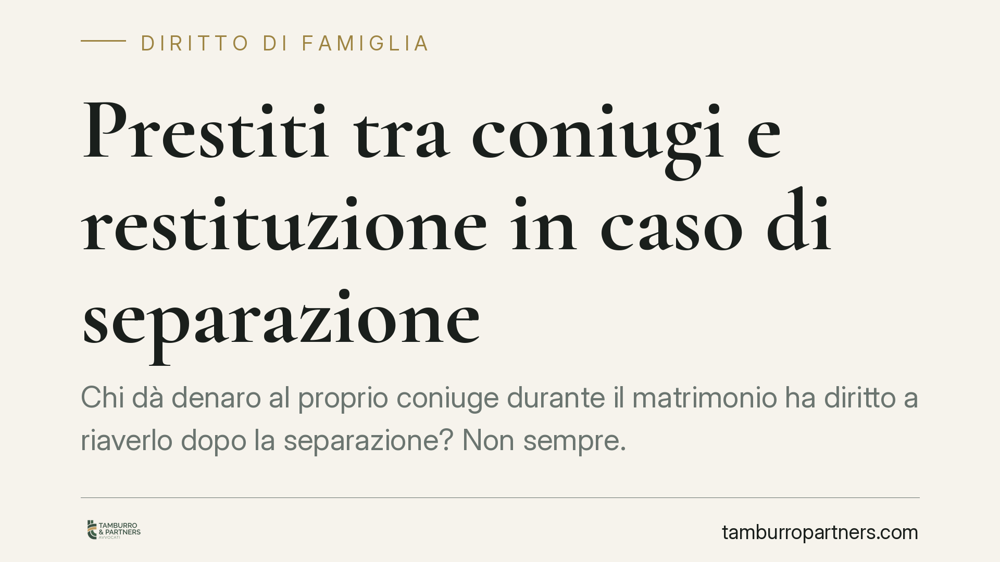
Chi dà denaro al proprio coniuge durante il matrimonio ha diritto a riaverlo dopo la separazione? Non sempre. Molto dipende dalla natura dell'operazione: un prestito vero e proprio…
Rivolgere a qualcuno l'epiteto «terrone» non è un gesto neutro sul piano giuridico. A seconda che la vittima sia presente o assente, e del mezzo usato, la condotta ricade nell'ille…
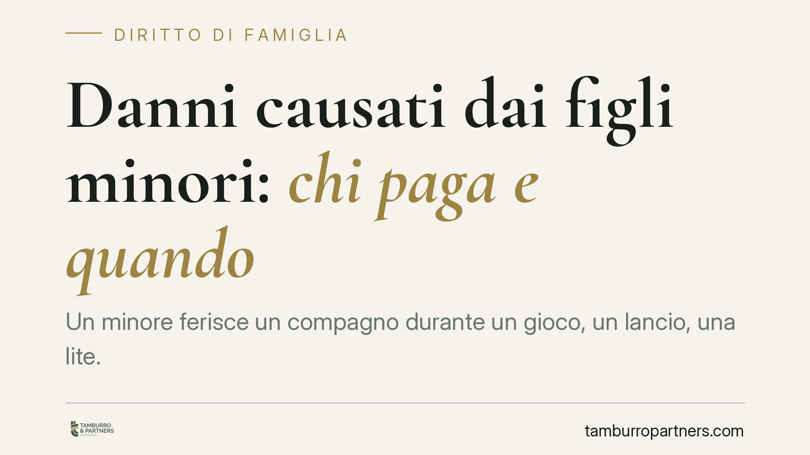
Un minore ferisce un compagno durante un gioco, un lancio, una lite. Chi risarcisce la vittima? Il codice civile pone sui genitori una responsabilità che scatta quasi automaticamen…
La perdita del lavoro non cancella automaticamente l'obbligo di mantenere un figlio maggiorenne. Ciò che rileva è la situazione economica complessiva del genitore, non l'etichetta …
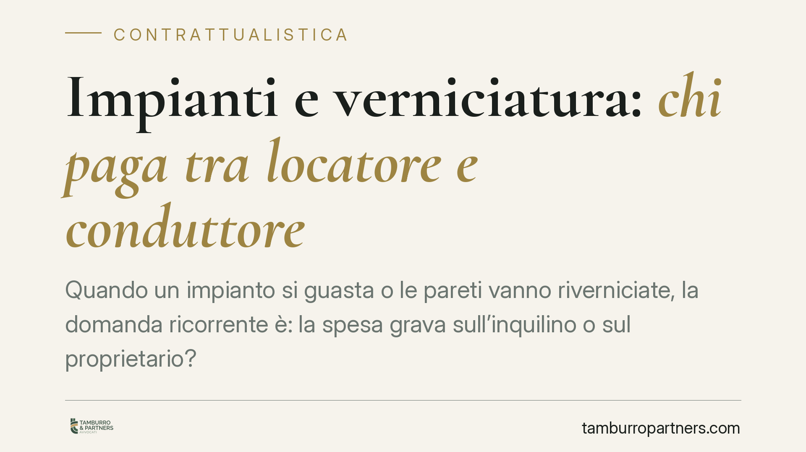
Quando un impianto si guasta o le pareti vanno riverniciate, la domanda ricorrente è: la spesa grava sull'inquilino o sul proprietario? La risposta non è mai automatica: dipende da…
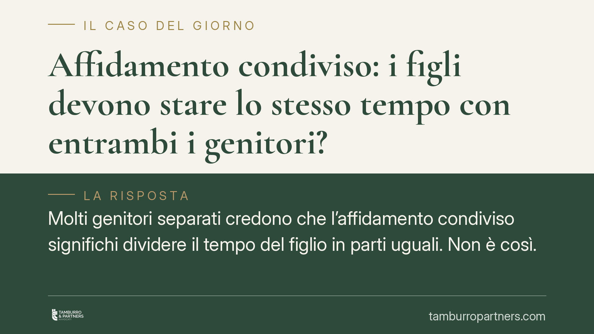
Molti genitori separati credono che l'affidamento condiviso significhi dividere il tempo del figlio in parti uguali. Non è così. La giurisprudenza ribadisce che l'obiettivo è la cr…
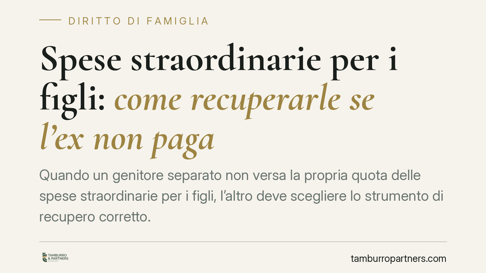
Quando un genitore separato non versa la propria quota delle spese straordinarie per i figli, l'altro deve scegliere lo strumento di recupero corretto. La Corte di Cassazione ha ch…
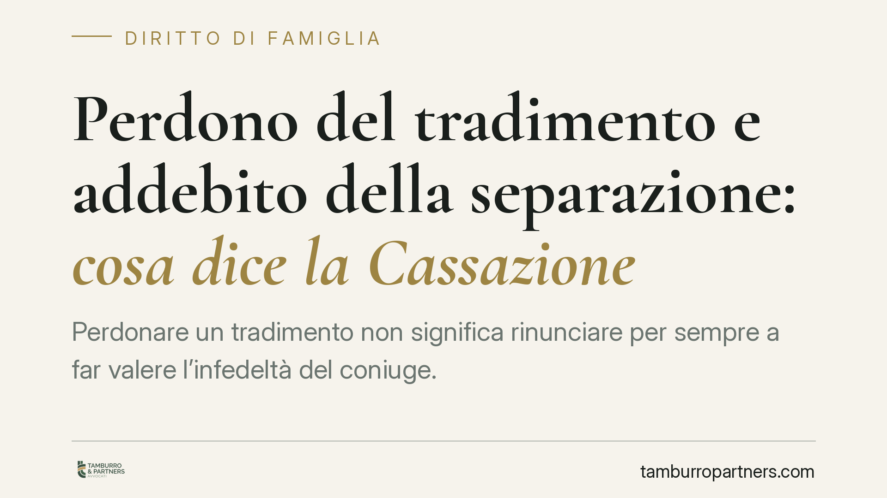
Perdonare un tradimento non significa rinunciare per sempre a far valere l'infedeltà del coniuge. La Cassazione precisa che il perdono di un episodio passato non copre nuove violaz…
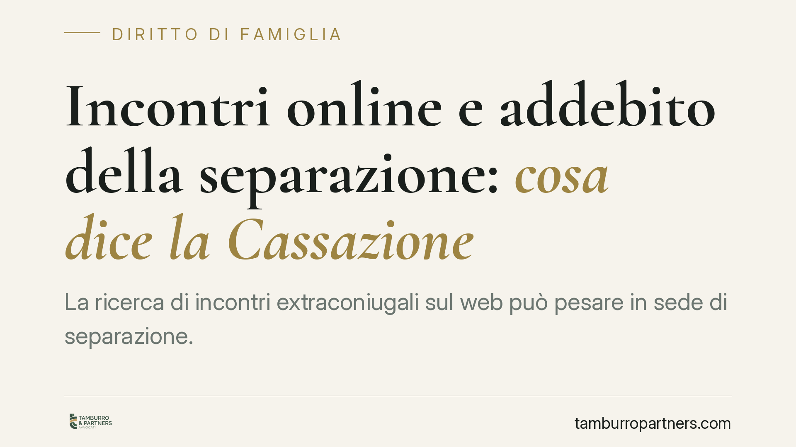
La ricerca di incontri extraconiugali sul web può pesare in sede di separazione. Secondo la Corte di Cassazione, iscriversi a siti o app per relazioni può integrare la violazione d…
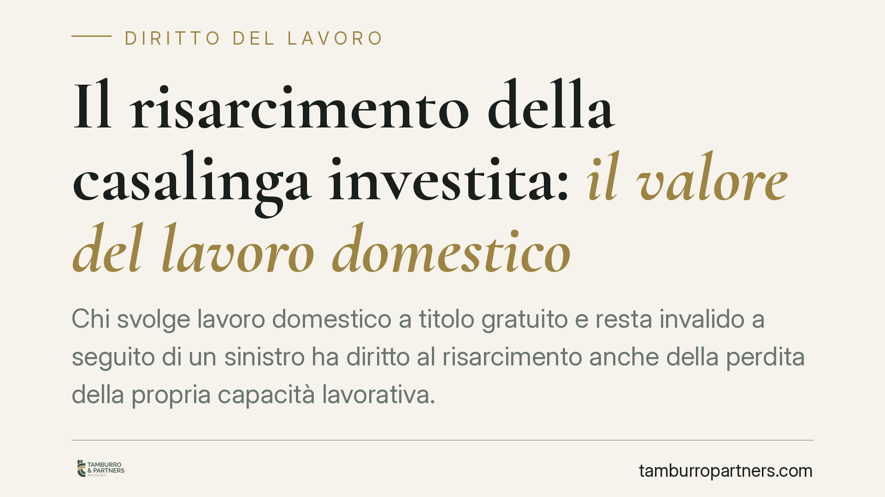
Chi svolge lavoro domestico a titolo gratuito e resta invalido a seguito di un sinistro ha diritto al risarcimento anche della perdita della propria capacità lavorativa. Un'attivit…
Rinunciare a un'eredità non chiude la questione. Se il rinunciante ha figli minorenni, questi possono subentrare al suo posto per rappresentazione. Il meccanismo richiede l'autoriz…
Il pettegolezzo che circola in ufficio non è sempre innocuo. Quando una voce lede la reputazione di un collega e viene riferita a più persone, può integrare il reato di diffamazion…
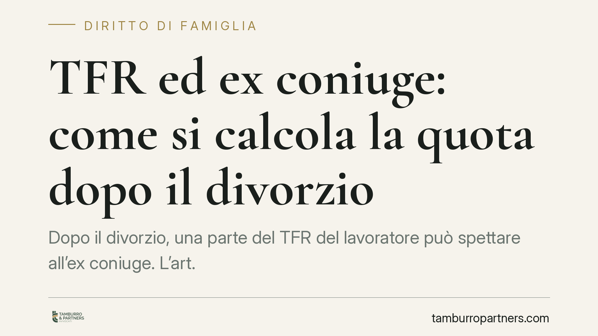
Dopo il divorzio, una parte del TFR del lavoratore può spettare all'ex coniuge. L'art. 12-bis della legge sul divorzio riconosce una quota pari al 40% dell'indennità riferibile agl…
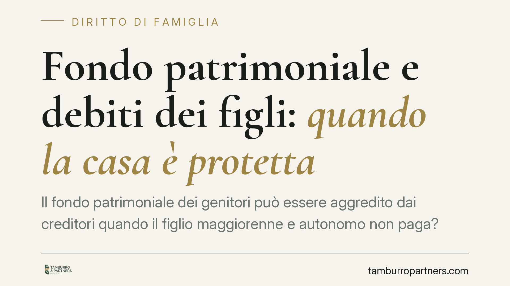
Il fondo patrimoniale dei genitori può essere aggredito dai creditori quando il figlio maggiorenne e autonomo non paga? La distinzione decisiva non riguarda chi ha contratto il deb…
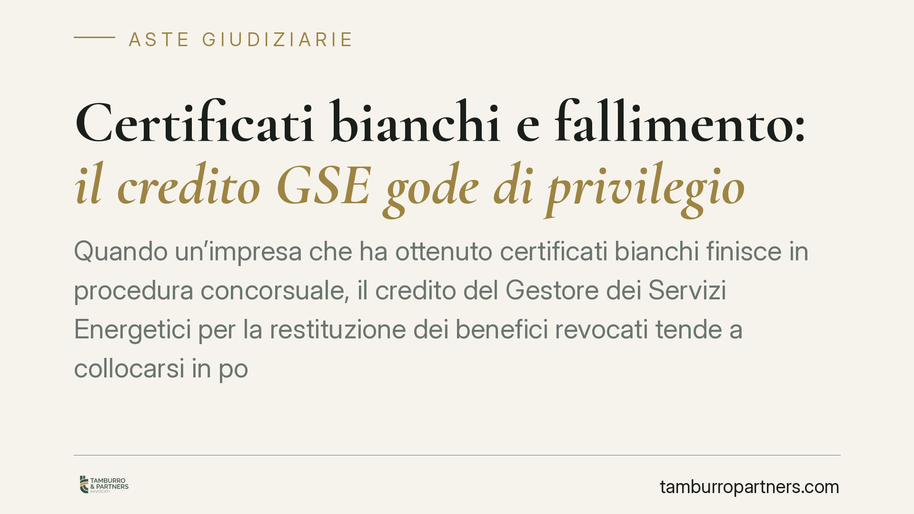
Quando un'impresa che ha ottenuto certificati bianchi finisce in procedura concorsuale, il credito del Gestore dei Servizi Energetici per la restituzione dei benefici revocati tend…
La malattia che colpisce il lavoratore prima o durante le ferie non è indifferente al diritto: può impedirne il decorso o sospenderlo, con l'obbligo di recuperare i giorni persi. I…
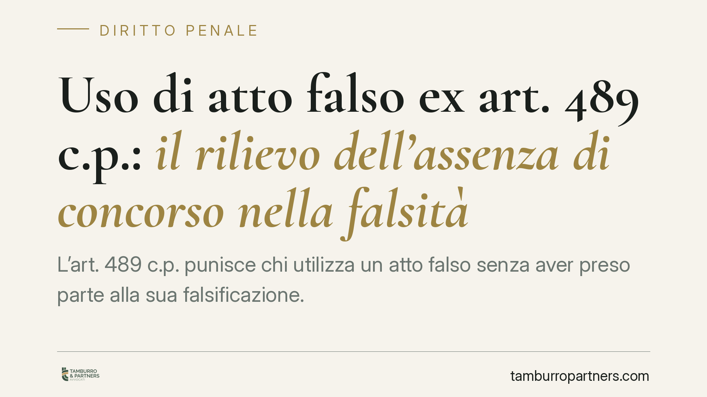
L'art. 489 c.p. punisce chi utilizza un atto falso senza aver preso parte alla sua falsificazione. È proprio l'assenza di concorso nella falsità a delimitare il reato: se l'agente …
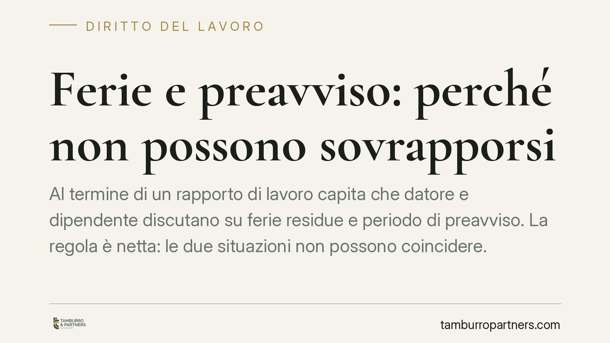
Al termine di un rapporto di lavoro capita che datore e dipendente discutano su ferie residue e periodo di preavviso. La regola è netta: le due situazioni non possono coincidere. L…
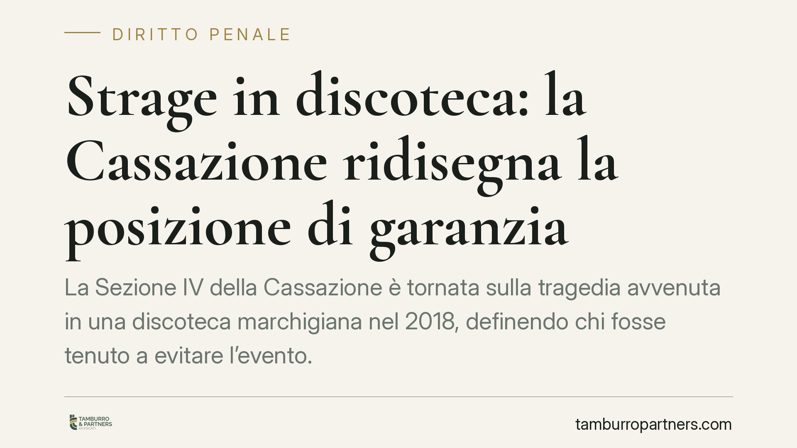
La Sezione IV della Cassazione è tornata sulla tragedia avvenuta in una discoteca marchigiana nel 2018, definendo chi fosse tenuto a evitare l'evento. La decisione precisa i confin…
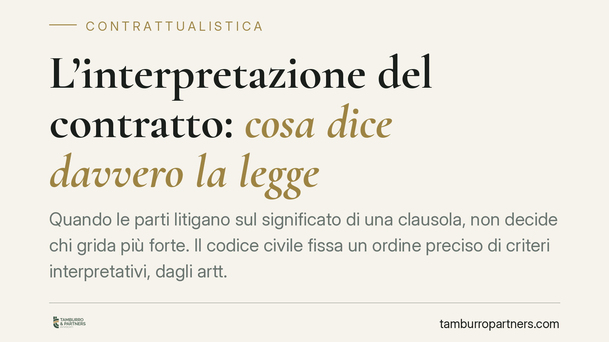
Quando le parti litigano sul significato di una clausola, non decide chi grida più forte. Il codice civile fissa un ordine preciso di criteri interpretativi, dagli artt. 1362 a 137…
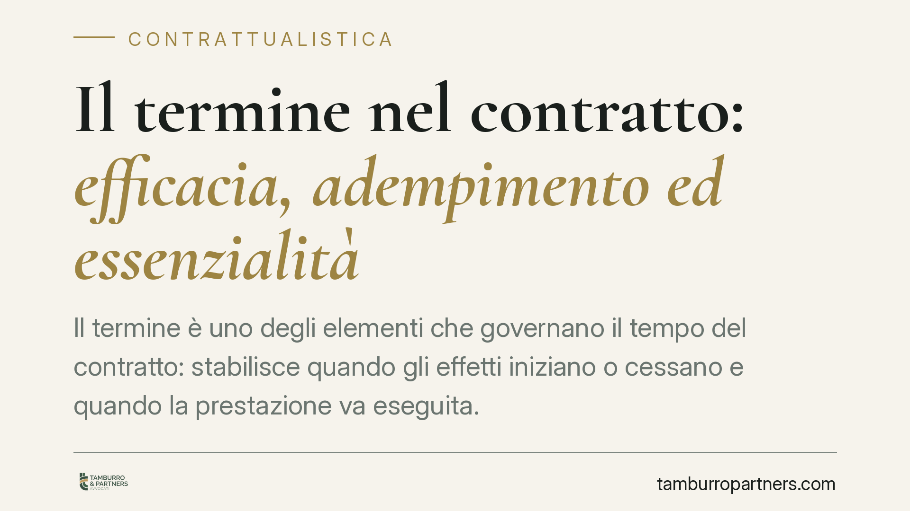
Il termine è uno degli elementi che governano il tempo del contratto: stabilisce quando gli effetti iniziano o cessano e quando la prestazione va eseguita. Distinguere il termine d…
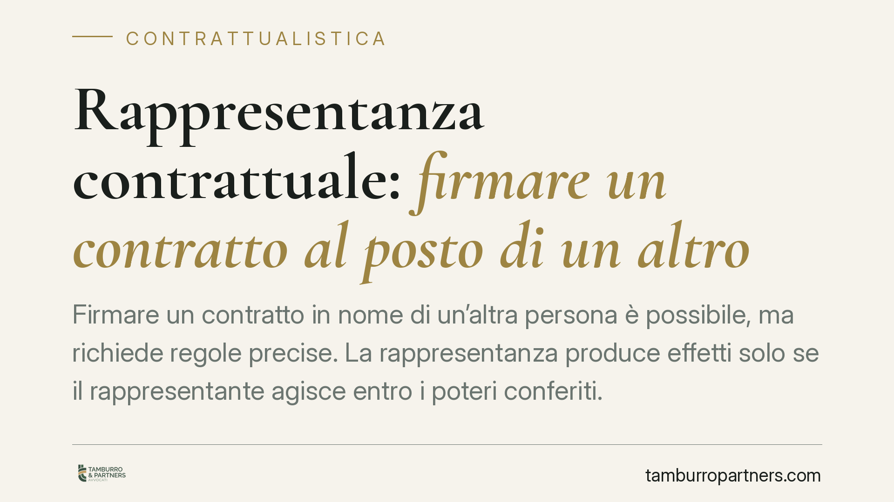
Firmare un contratto in nome di un'altra persona è possibile, ma richiede regole precise. La rappresentanza produce effetti solo se il rappresentante agisce entro i poteri conferit…
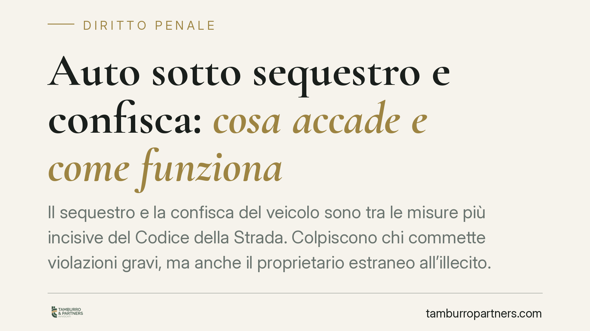
Il sequestro e la confisca del veicolo sono tra le misure più incisive del Codice della Strada. Colpiscono chi commette violazioni gravi, ma anche il proprietario estraneo all'ille…
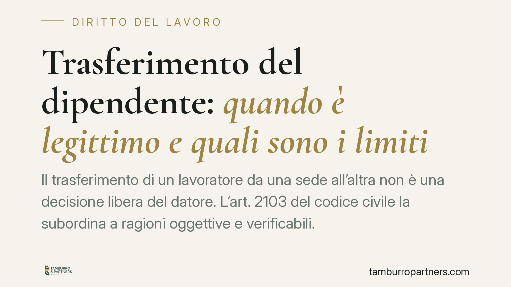
Il trasferimento di un lavoratore da una sede all'altra non è una decisione libera del datore. L'art. 2103 del codice civile la subordina a ragioni oggettive e verificabili. Capire…
Non ogni conflitto familiare è stalking. La Cassazione ricorda che gli insulti e le molestie della suocera integrano il reato di atti persecutori solo se producono un impatto psico…
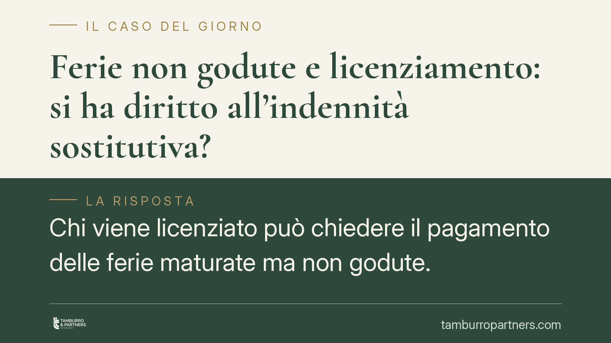
Chi viene licenziato può chiedere il pagamento delle ferie maturate ma non godute. La regola generale è di tutela del lavoratore, ma il quadro cambia tra settore privato e pubblico…
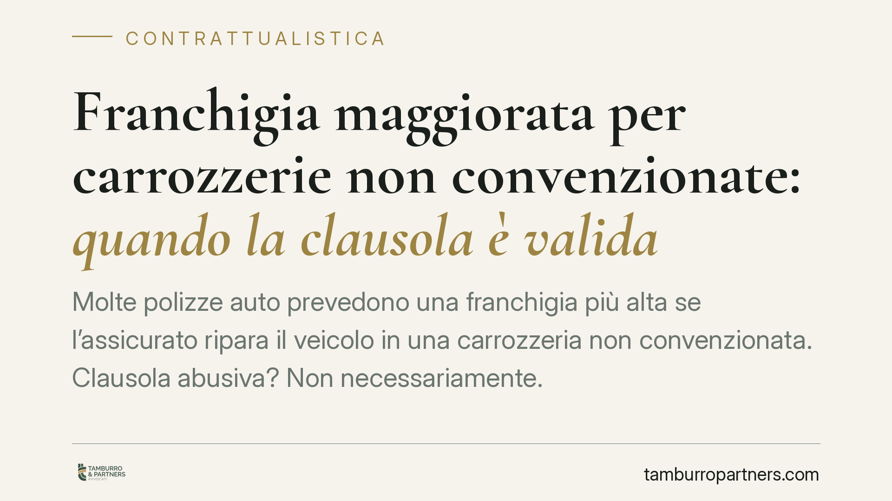
Molte polizze auto prevedono una franchigia più alta se l'assicurato ripara il veicolo in una carrozzeria non convenzionata. Clausola abusiva? Non necessariamente. La valutazione v…
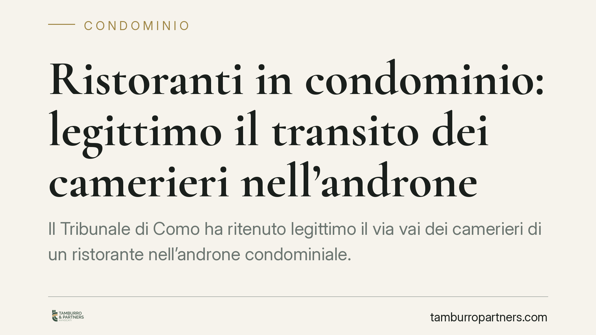
Il Tribunale di Como ha ritenuto legittimo il via vai dei camerieri di un ristorante nell'androne condominiale. Il passaggio, di per sé, non altera l'estetica dell'edificio né impe…
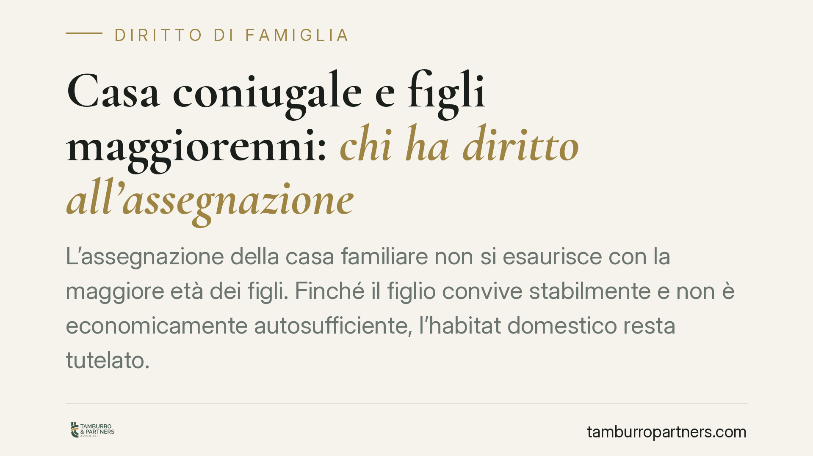
L'assegnazione della casa familiare non si esaurisce con la maggiore età dei figli. Finché il figlio convive stabilmente e non è economicamente autosufficiente, l'habitat domestico…
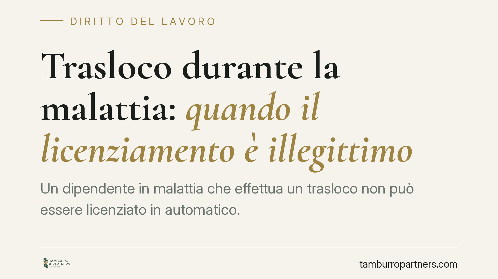
Un dipendente in malattia che effettua un trasloco non può essere licenziato in automatico. Lo ha stabilito il Tribunale di Campobasso: senza prova scientifica che l'attività abbia…